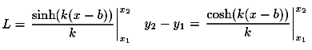

Simulation der Kette
Man kann die beiden Aufhängepunkte mit der Maus verändern.
Alternativ können Sie auch mit 'Step' die Position vom linken Aufhängepunkt schrittweise verändern.
Ist die Distanz zwischen den zwei Aufhängepunkten grösser als die Kettenlänge, so wird die Strecke zwischen
den zwei Punkten rot gezeichnet.
Die Berechnung einer Kette mit einer festen Länge L=2.5, variablen Aufhängepunkten (x1/y1) und (x2/y2) erfordert die Lösung eines nicht-linearen Gleichungssystems mit zwei Unbekannten. Diese Gleichungen sind

x1= y1= x2= y2=
Lösung: b= k=